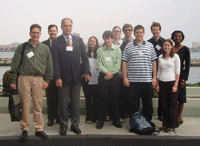

The SIAM Student Chapter at Worcester Polytechnic Institute took to the road last October to attend the 2007 SIAM Conference on Mathematics for Industry. The students presented their work in the minisymposium “Undergraduate Industrial Research at WPI” and in the student poster session. Shown here with WPI faculty Bogdan Vernescu (third from left), Vadim Yakovlev (fifth from right), and Suzanne Weekes (far right), and Olin College faculty member Burt Tilley (far left) are WPI students, past and present, James Lescoe, Morgan Gieseke, Jonathan Adler, Angela Leo, Casey Richardson, Brian Cordes, and Rebecca Wasyk.
Image and caption from SIAM News: Volume 41, Number 5, June 2008